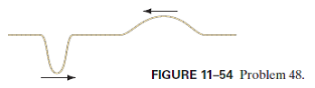
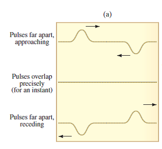
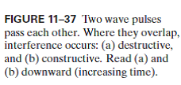

When the two waves pass through the same region of the space at same time is known as interference.
(I) The two pulses shown in Fig. 11–54 are moving toward each other. (a) Sketch the shape of the string at the moment they directly overlap. (b) Sketch the shape of the string a few moments later. (c) In Fig. 11–37a, at the moment the pulses pass each other, the string is straight. What has happened to the energy at this moment?



When the two waves pass through the same region of the space at same time is known as interference.
As mention in the figure, the two waves having same magnitude but opposite in the direction. Therefore, both the wave meet and pass right by each other.
The point where two waves meet together is known as overlap.
(a)
The graph of the shape of the string at the moment where two pulses directly overlap can be given as,
(b)
The graph of the shape of the string after few minutes later where two pulse directly overlap can be given as,
(c)
When the two pulses pass each other, the energy is all kinetic energy at this moment and string has no displacement. Therefore, elastic potential energy at this moment is zero because no displacement.